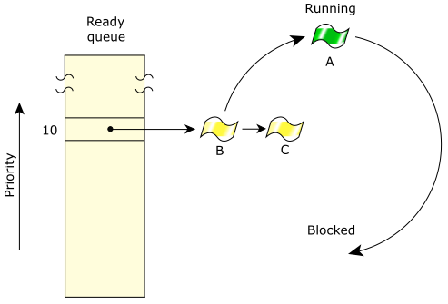

To meet the needs of various applications, QNX OS provides multiple scheduling policies.
other—SCHED_OTHER) behaves in the same way as round-robin. We don't recommend using the
otherscheduling policy, because its behavior may change in the future.
Each thread in the system may run using any method. Scheduling methods are effective on a per-thread basis, not on a global basis for all threads and processes on a node.
Remember that these scheduling policies apply only when two or more threads that share the same priority are READY (i.e., the threads are directly competing with each other). If a higher-priority thread becomes READY, it immediately preempts all lower-priority threads.
In the following diagram, three threads of equal priority are READY. If Thread A blocks, Thread B will run.

A thread can call pthread_attr_setschedparam() or pthread_attr_setschedpolicy() to set the scheduling parameters and policy to use for any threads that it creates.
struct sched_param param;
int policy, retcode;
/* Get the scheduling parameters. */
retcode = pthread_getschedparam( pthread_self(), &policy, ¶m);
if (retcode != EOK) {
printf ("pthread_getschedparam: %s.\n", strerror (retcode));
return EXIT_FAILURE;
}
printf ("The assigned priority is %d, and the current priority is %d.\n",
param.sched_priority, param.sched_curpriority);
/* Increase the priority. */
param.sched_priority++;
/* Set the scheduling algorithm to FIFO */
policy = SCHED_FIFO;
retcode = pthread_setschedparam( pthread_self(), policy, ¶m);
if (retcode != EOK) {
printf ("pthread_setschedparam: %s.\n", strerror (retcode));
return EXIT_FAILURE;
}
When you get the scheduling parameters, the sched_priority member of the sched_param structure is set to the assigned priority, and the sched_curpriority member is set to the priority that the thread is currently running at (which could be different because of priority inheritance).